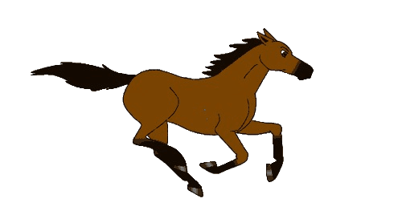

<!DOCTYPE html>
<html lang="en">
<head>
	<meta charset="UTF-8">
	<meta name="viewport" content="width=device-width, initial-scale=1.0">
	<script src="https://ajax.googleapis.com/ajax/libs/jquery/3.6.0/jquery.min.js"></script>
	<title>미로 이동하기</title>
	<!--1. 미로 배열 선언하기
       2. 배열 크기만큼 테이블 xy좌표로 만들기
       3. 테이블에 색칠하고 꼬부기 그리기
       4. key 이벤트 추가하기
          키 누를때 마다 이동여부를 확인해서 이동 가능하면 이동시키고 이동 불가시 이동시키지 않는다.-->

	<style>


	</style>

	<script>
		var map=[// 벽을 생성해준다. => 벽과 길 및 골인지점 => 만들어주기 위해 숫자를 넣어줌
			[1,1,1,1,1,1,1,1,1,1,1,1,1,2,1],
			[1,0,0,0,0,0,0,0,0,0,0,1,1,0,1],
			[1,0,1,1,1,1,1,1,1,1,0,0,1,0,1],
			[1,0,1,0,0,0,0,0,0,1,1,0,1,0,1],
			[1,0,1,0,1,1,1,1,0,1,0,0,1,0,1],
			[1,0,1,0,1,1,0,0,0,1,0,1,1,0,1],
			[1,0,1,0,1,0,0,1,0,1,0,0,1,0,1],
			[1,0,1,0,1,0,1,0,1,0,1,0,1,0,1],
			[1,0,0,0,1,0,0,0,1,0,0,0,1,0,1],
			[1,1,1,1,1,0,1,0,1,1,0,1,1,0,1],
			[1,0,0,0,1,0,1,0,1,1,0,0,1,0,1],
			[1,0,1,0,1,0,1,0,0,1,1,0,1,0,1],
			[1,0,1,0,1,1,1,1,0,1,1,0,1,0,1],
			[1,3,1,0,0,0,0,0,0,1,0,0,0,0,1],
			[1,1,1,1,1,1,1,1,1,1,1,1,1,1,1]
		];
		// for문으로 미로를 찍어준다.
		function madeTable(y,x){
			var str="";
			str+="<table border=1>";
			for(var i=0; i<y; i++){
				str+="<tr>";
				for(var j=0; j<x; j++){
					//html 미로를 만들어준다.
					str+=`<td id=y${i}x${j} width=25 height=25>`;   /*Tab위에 역따옴표이고 ${i}안에 i값이 들어간다.*/
					str+="</td>";
				}
				str+="</tr>";
			}
			str+="</table>";
			return str;
		}
		//맵 한번 훓어보기 위해서
		window.onload = function(){
			document.body.innerHTML = madeTable(map.length,map[0].length);
		}
		// 벽과 길, 골인 지점 만들어준다.
		function drawArray(arr){
			var y=arr.length;
			var x=arr[0].length;

			for(var i=0;i<y;i++){
				for(var j=0;j<x;j++){
//str+=`<td id=y${i}x${j}>`;
					switch(arr[i][j]){
						case 1:
							document.getElementById("y"+i+"x"+j).setAttribute("bgcolor","red");
							break;
						case 2:
							document.getElementById("y"+i+"x"+j).setAttribute("bgcolor","yellow");
							break;
						case 3:
							document.getElementById("y"+i+"x"+j).innerHTML=""
							break;
					}

				}
			}
		}
		var unitX = 1;
		var unitY = 13;
		window.onload = function(){
			document.body.innerHTML = madeTable(map.length,map[0].length);
			drawArray(map);
			document.body.onkeypress=function() { /*body에서도 onkeypress를 할 수 있다.*/
				// alert(event.keyCode);
				function isMove(y,x){
					//이동 가능하면 true , false
					if(map[y][x]==1){
						return false;//이동 불가하면 false
					}else{
						return true;//이동 가능하면  true
					}
				}
				switch(event.keyCode){
					case 119://up
						document.getElementById(`y${unitY}x${unitX}`).innerHTML=
								"";
						unitY--;
						document.getElementById(`y${unitY}x${unitX}`).innerHTML=
								"";
						break;
					case 100: //right
						document.getElementById(`y${unitY}x${unitX}`).innerHTML=
								"";
						unitX ++;
						document.getElementById(`y${unitY}x${unitX}`).innerHTML=
								"";
						break;
					case 97: // left

						document.getElementById(`y${unitY}x${unitX}`).innerHTML=
								"";
						unitX --;
						document.getElementById(`y${unitY}x${unitX}`).innerHTML=
								"";
						break;
					case 115: //down
						document.getElementById(`y${unitY}x${unitX}`).innerHTML=
								"";
						unitY ++;
						document.getElementById(`y${unitY}x${unitX}`).innerHTML=
								"";
						break;
				}
			}
		}


	</script>
</head>
<body>
</body>
</html>


